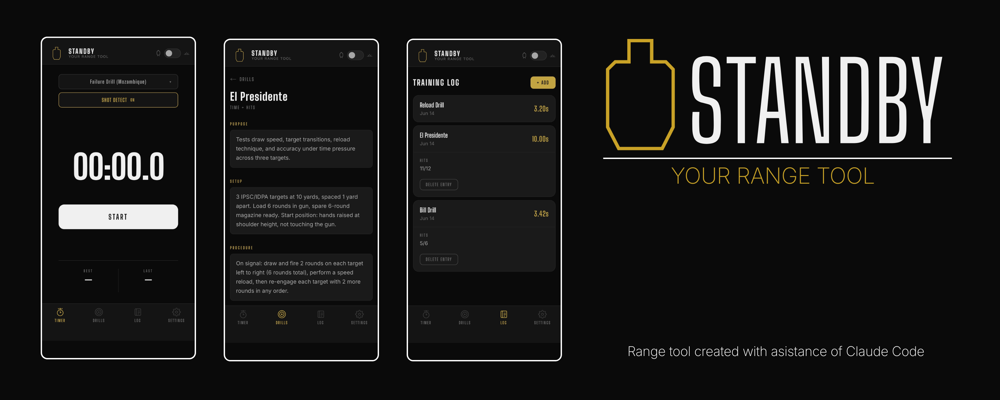

Ideas in motion, code in place.
Vyvíjím hry, webové aplikace a vývojářské nástroje — cokoliv, co situace vyžaduje. Každý projekt je příležitostí naučit se něco nového, vyřešit reálný problém a dodat něco, na co jsem hrdý.
Rád nacházím mezery a vyplňuji je — ať už jde o PWA pro správu vybavení nebo rozšíření pro VS Code na Marketplace. AI využívám jako součást svého pracovního procesu — pohybuji se rychleji, ale všechna rozhodnutí jsou moje vlastní.
Můj přístup je praktický: ponořím se do projektu, zjistím, co funguje, poučím se z chyb a neustále iteruji.
Toto portfolio odráží mou cestu — jak myslím, co tvořím a jak se vyvíjím jako vývojář.

Podívejte se na mou cestu vývojáře níže!
Strukturovaný kurz, který rozšiřuje znalosti Unity workflow a C# skriptování prostřednictvím vedených projektů a praktických herních systémů.
Přátelský úvod pro začátečníky do Unity a C#, použitý jako první zdroj pro pochopení základů skriptování a engine principů.
Projektově orientovaný kurz frontendu, pokrývající HTML, CSS a JavaScript prostřednictvím krátkých a praktických projektů.
Absolvováno: Claude 101, Introduction to Claude Cowork a Claude Code 101 — základy AI, prompt engineering a tvorba s Claude Code.

Shot timer a tréninkový pomocník pro airsoft a střelecký trénink.
Mobile-first Progressive Web App vytvořená pro použití na střelnici, během drilu, v okamžiku akce — časovač, knihovna drilů a tréninkový deník v jednom offline nástroji. Navrženo a vedeno mnou, implementace vytvořena pomocí AI-assisted workflowu.

Platforma pro správu vybavení a operační přípravu pro airsoft a milsim akce.
Mobile-first Progressive Web App navržená pro správu vybavení, přípravu loadoutů, organizaci operací a sledování výstroje napříč zařízeními. Navrženo a vedeno mnou, implementace vytvořena pomocí AI-assisted workflow.

Claude Code limity, vždy na očích.
Rozšíření pro VS Code, které zobrazuje limity využití Claude Code (5hodinová session a týdenní session) jako trvalou položku ve stavovém řádku — vždy viditelné, bez nutnosti zadávat příkazy. Navrženo a řízeno mnou, kód napsán s pomocí AI.

Vlastní dlouhodobý solo projekt — aktivně rozpracovaný
First-person atmosférická hra zasazená do zfiktované jaderné katastrofy v Jaslovských Bohunicích v roce 1977. Veškeré modely, textury a level design jsou mojí vlastní prací.

Hra založená na přesnosti, zaměřená na načasování, hybnost a kontrolu hráče.
Původně vytvořena jako součást Unity kurzu, poté rozšířena mimo tutoriál o vlastní systémy, UI a úrovně.

Simulátor hodu kostkami.
Malý JavaScript projekt demonstrující základní interaktivitu a DOM manipulaci. Projekt začal z tutoriálu a byl rozšířen o další funkce a zlepšení UI.
© 2026 Tima Yakushevych